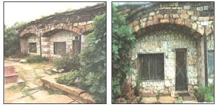

Fireproof, insurance-proof, windproof, water damage-proof, hail-proof, mouse-proof, paint-proof, and self-air-conditioning," Ray Swangkee boasted as he showed us his and his brother Vern's pride and joy, a 13-million-pound rock home, hand-built near the town of Horatio, AR. That's nearly 7,000 tons of backbreaking labor. Their fortress is framed by 360 linear feet of concrete walls, poured between frames made of ¾-inch exterior plywood, and faced with marble the brothers collected during five years of construction. From the marble floor tiles hand laid over five months to the marble and granite chimney, the house will be a thousand-year testament to the patience and care of the two brothers. As if to prove that particular point, a tornado tore a path of destruction to their doorstep a few years ago, and passed directly over the house without displacing a stone.
Though politely requesting that he not be photographed, Ray is only too happy to send those interested more information about the house's construction. Send $2 and a SASE to: Ray Swangkee, Angel Ridge, Box 305, King's Mountain, KY 40442.
|
 Though the house is ""99 percent rock,"" according to Ray, the brothers did have to make some concessions in the form of these windowpanes and the three-inch-thick oak front door. The entire house was built in five years for under $60,000, and neither brother had to borrow a dime to do it. |
The south-facing home is dividedinto two apartments, with aworkshop in the center, to the left isa red granite water fountain and twogranite benches. |
Ray's Brazilian agate windows, which, according to Ray, ""make great curtainswhile still letting in a stunning light show."" |
|
Vern's window design. The agates are cutinto ¼"" slices, then sandwiched betweentwo panes of ¼"" glass. |
Vern's den |
Bedroom floored with Algerian onyx |
|
Marble fireplace |
A small portion of theceiling, which is one footthick at its thinnest point |
The 150-ton, 3,000-square-foot roof. |